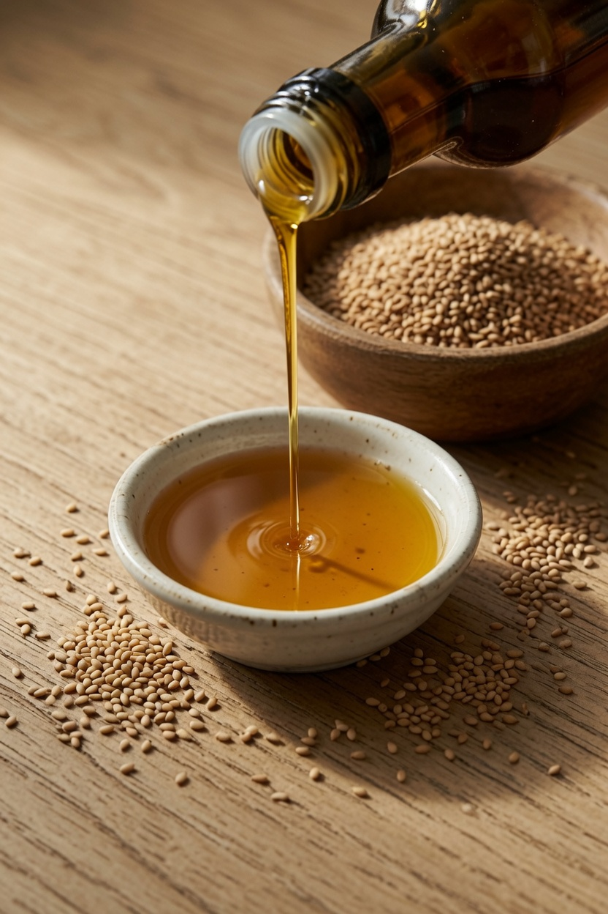
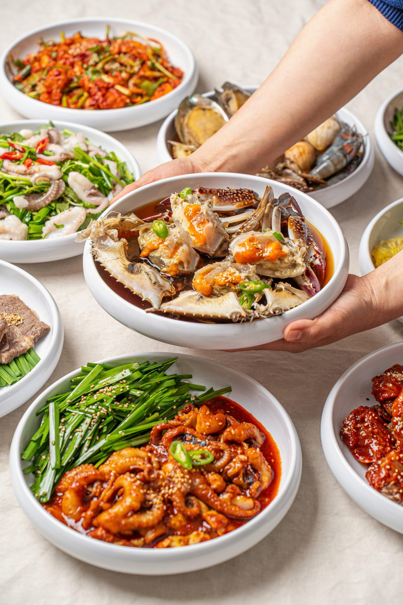
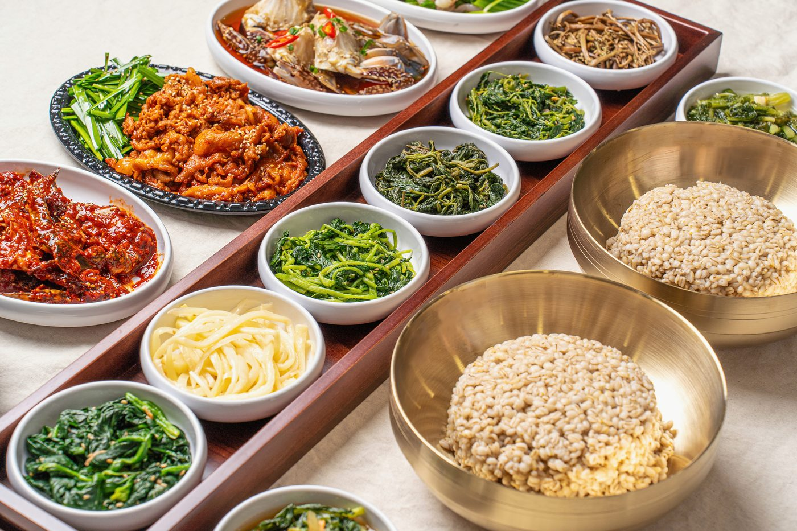
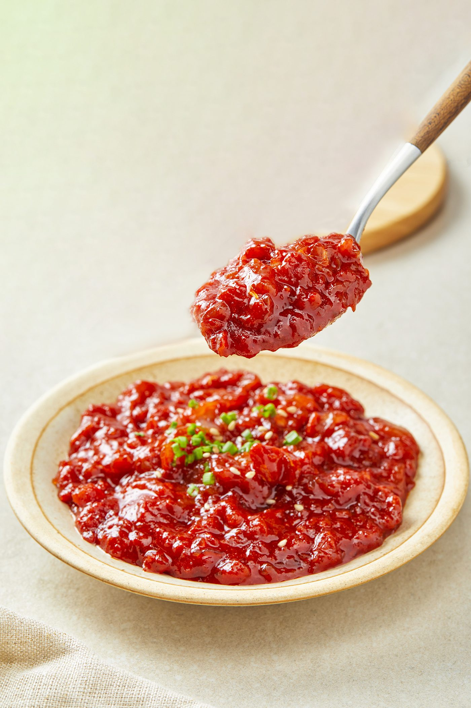
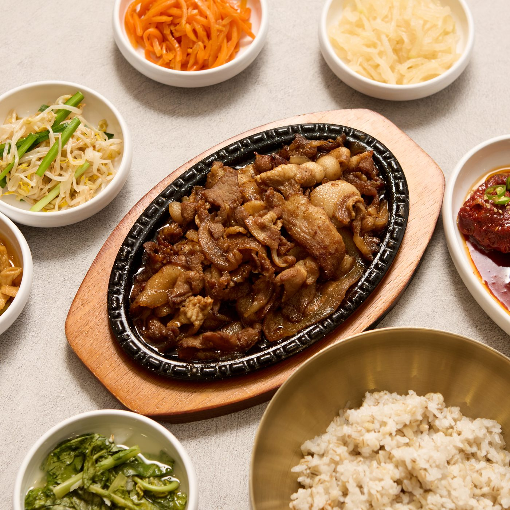
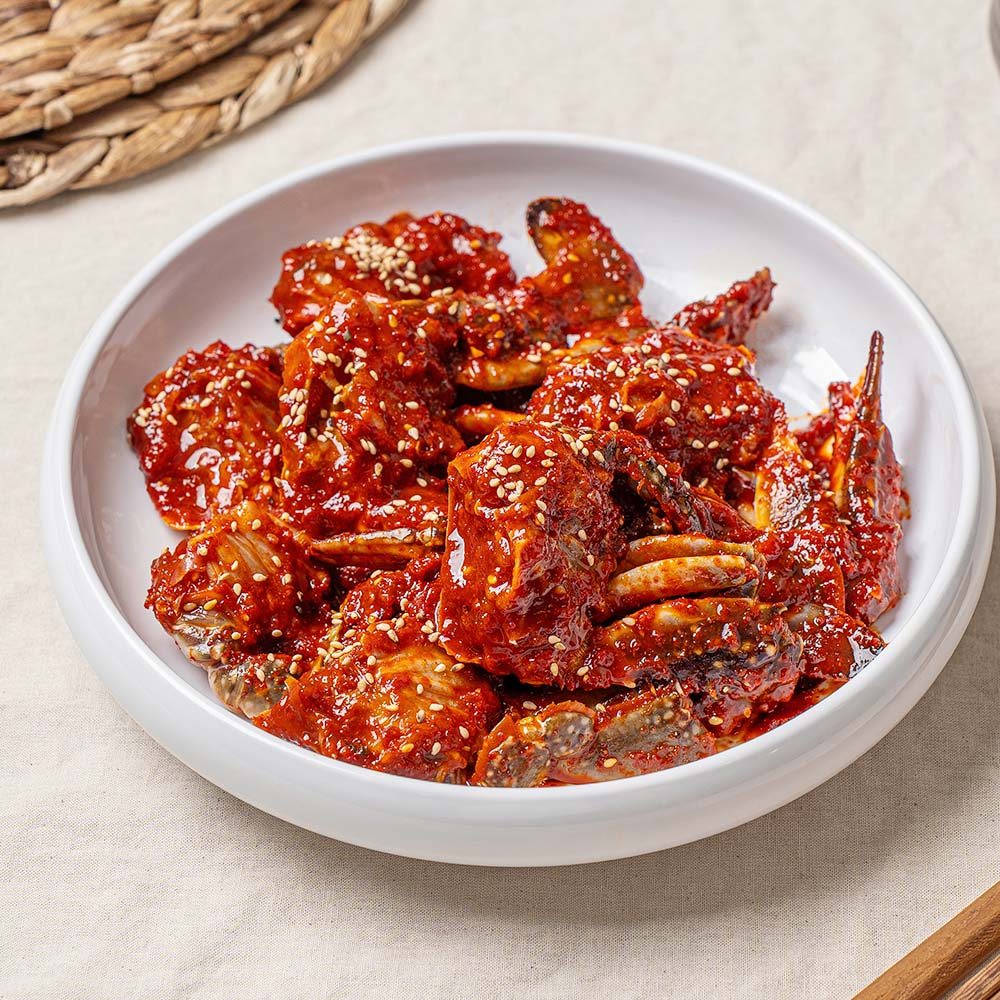
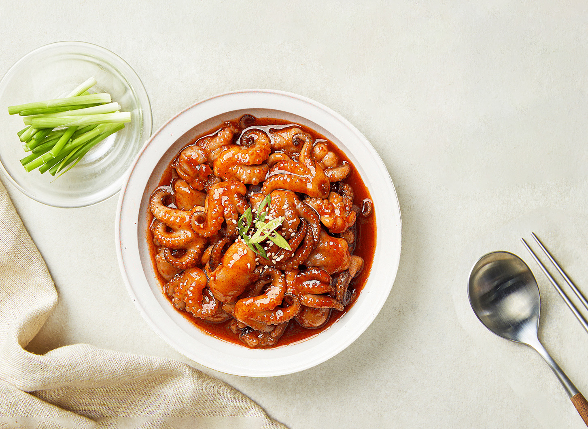

이야기 하나
인사동 보리밥,
The comfort of a humble bowl.
따뜻한 밥 한 그릇에 위로받을 수 있는 곳.
어느 날 점심, 소박한 보리밥 한 그릇이
마음까지 든든하게 바꿔드릴 수 있기를 바랍니다.
이야기 둘
매일 직접, 정성껏
Made by hand, with care.
식탁에 오르는 모든 음식은
하나하나 우리 손으로 직접 만듭니다.
부담 없고 속이 편안한 한 끼를 위해
재료 손질부터 양념 하나까지
정성과 믿음을 담아 대접합니다.

이야기 셋
재료의 진심
Honesty in every ingredient.
깨끗하게 손질한 연평도 암꽃게부터 직접 짠 통깨 참기름까지
맛은 흉내 낼 수 있지만, 진짜는 다릅니다.

국내산 연평도 암꽃게 서해 연평도 암꽃게만 골라, 알이 꽉 찬 제철에 정성껏 담급니다.

국내산 보리밥 매일 아침 새로 지어, 구수하게 올리는 국내산 보리밥.

양념과 장 직접 담근 장으로만 내는, 깊고 진한 감칠맛.

황학동 통참깨 참기름 황학동 통참깨를 그날그날 짜낸, 고소함 가득한 참기름.

이야기 넷
4게의 약속
The four promises we keep.
-

첫 번째 약속깐깐하게
국내산 재료를 골라
매일 직접 손질합니다 -

두 번째 약속든든하게
부담 없이 속이 편안한
한 끼를 차립니다 -

세 번째 약속감칠맛나게
지나치지 않은 양념으로
본연의 풍미를 살립니다 -

네 번째 약속불맛나게
마지막엔 불향을 입혀
그 맛을 완성합니다

간장게장
국내산 연평도 암꽃게로 담근 밥도둑
밥상
매일 줄 서서 먹는 밥상
A table worth the wait.
-
간장게장
국내산 연평도 암꽃게로 담근 밥도둑
-

보리밥 직화제육 정식
불향 가득, 인사동 대표 보리밥 정식 차림
-

국내산 양념게장
매콤달콤 중독성 강한 국내산 게장
-

직화 주꾸미
불향 가득 쫄깃한 직화 주꾸미
공간
따뜻한, 한 끼
A place of warmth in Insadong.
음식이 전하는 온기와 정직함.
단순한 식사가 아닌, 하루를 위로하고 채우는
한 끼가 되도록 마음을 담습니다.
초대
같은 길을
함께 걸어가실
분을 찾습니다
Walk this road with us.
HACCP 인증 자체 공장 · 식재부터 양념·소스까지 직접 생산
홍콩·미국 수출 · 인사동 본점에서 검증된 맛